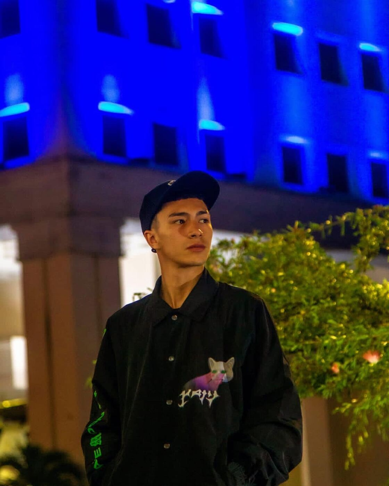
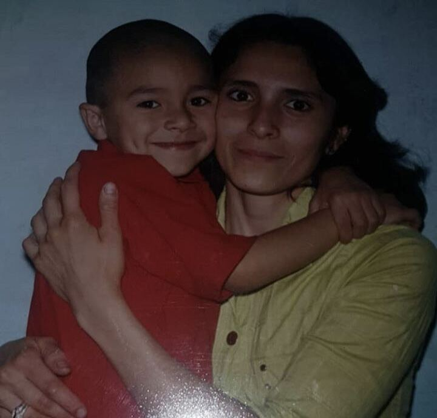
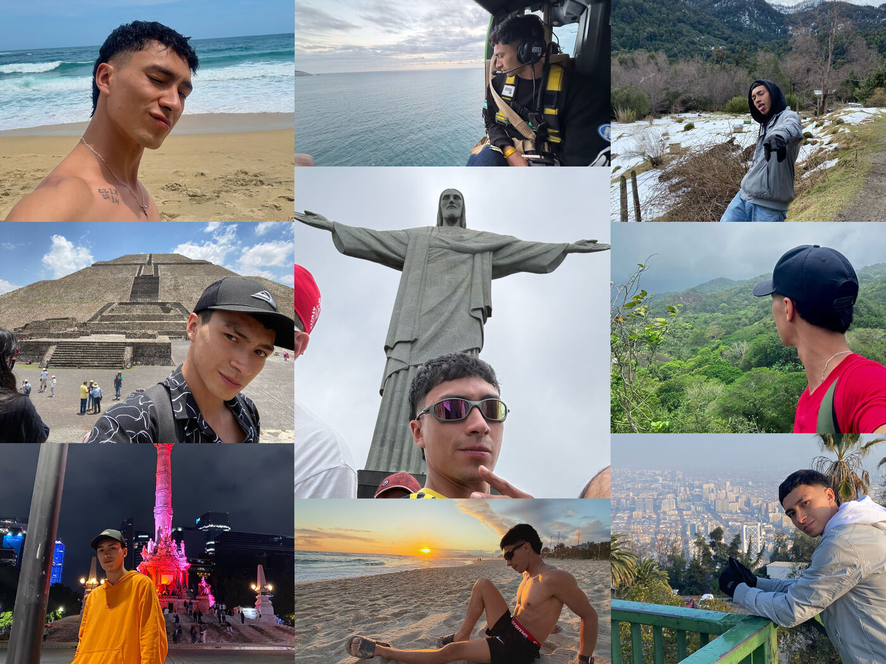
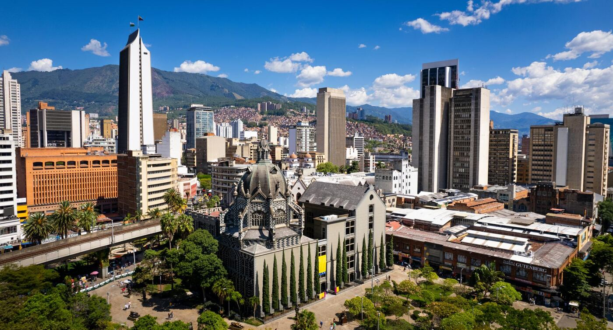

Página personal donde recorro mi historia, lo que me inspira, mi lugar en el mundo y hacia dónde voy.
Cuatro paradas de mi historia, la persona que más me inspira, lo que me hace reír y la música que me acompaña. Toca "descubrir" en cada capítulo.

Nací y crecí en Manizales. De mi infancia guardo recuerdos muy bonitos: con mis padres éramos muy unidos y siempre cuidaban de mí. Solíamos salir a conocer nuevos lugares fuera de Manizales — mis recuerdos más lindos. A los 10 años mi padre nos dejó, algo duro para mí y mi madre; desde ese momento ella tuvo que asumir toda la responsabilidad de sacarnos adelante. La vi enfrentar dificultades que de niño no entendía, pero que hoy valoro profundamente.
(Erikson — Infancia · Confianza vs. Desconfianza)
En el colegio era buen estudiante, solía quedar en primer o segundo puesto del grupo, y durante esa etapa conocí a mi mejor amiga, un vínculo que ha durado hasta hoy. Era fanático del deporte, aunque sufría de constantes sangrados y dolores de cabeza. Mi vida dio un giro inesperado cuando sufrí una parálisis de Bell, con una recaída años después; buena parte de mi adolescencia la pasé entre hospitales y médicos. A pesar de todo, mis amigos siempre me apoyaron y me brindaron su afecto, y eso me hizo sentir bien incluso en los momentos difíciles. Aprendí que podía ser fuerte y seguir destacando.
(Erikson — Edad Escolar · Industria vs. Inferioridad)
Cuando me gradué del colegio y también recibí mi técnico en mecánica, decidí trabajar con mi tío durante unos años. Fue en esa etapa donde aprendí el valor del trabajo y el sacrificio, y donde definí lo que quería en mi vida: conocer el mundo. De cada país que he conocido me he llevado el recuerdo de lo hermosa que es la vida, no por lo material y los lujos, sino por todo lo que la naturaleza nos brinda en cada lugar del mundo.
(Erikson — Adolescencia · Identidad vs. Confusión)
En el 2022 tomé la decisión de mudarme a Medellín en busca de un mejor futuro, donde conseguí un gran empleo y pude establecer mi vida en esta ciudad. Desde hace varios años me ha llamado mucho la atención el mercado financiero, los proyectos de inversión y saber sobre economía y trabajar dentro de ella. Después de tantos años, tomé el valor de inscribirme a la Universidad de Antioquia para lograr otro sueño más.
(Erikson — Juventud · Intimidad vs. Aislamiento)La persona que más me inspira en la vida es mi mamá. Desde que mi papá nos dejó, ella asumió sola toda la responsabilidad de sacarme adelante a mí y de cuidar a mi abuela. Nunca se rindió, siempre luchó por brindarme un mejor futuro. Su esfuerzo, valentía y amor la convirtieron en la persona que más admiro y la mayor inspiración en mi vida.
Mi mamá me ha enseñado lo que es el amor verdadero y desinteresado. Nunca dejó de darme cariño ni de priorizar mi bienestar. Ese vínculo de afecto ha sido mi base más sólida.
Ella representa para mí la responsabilidad, la honestidad y el compromiso. Nunca abandonó sus deberes ni con mi abuela ni conmigo, incluso cuando la vida le puso las cosas difíciles.
Verla trabajar y luchar sola por sostener un hogar me mostró la importancia de la disciplina y el esfuerzo. Es mi referente de que se puede salir adelante aunque las circunstancias no sean las ideales.
Top 3 de videos bizarros de TikTok.
Este tipo de contenido me hace reír porque rompe con lo cotidiano y me saca de la rutina. Según Maslow, después de cubrir las necesidades básicas buscamos también momentos de disfrute y relajación mental; este humor absurdo cumple justo esa función.
Me identifico con este video porque lo bizarro conecta con lo inesperado de la vida real, y verlo desde el humor me ayuda a no tomarme todo tan en serio. Doyal y Gough hablan del ocio como necesidad humana intermedia, y este contenido cumple ese papel.
Este video me parece divertido porque el humor bizarro también es una forma de conexión social: cuando lo comparto con mis amigos generamos un espacio de risa compartida, algo que conecta con la necesidad de pertenencia de Maslow.
Toca ▶ para "reproducir".
Esta canción simplemente me hace mover, cuando suena me olvido de todo por un rato, no importa dónde esté. Creo que eso también es parte del desarrollo humano: no todo es trabajar y cumplir metas, uno también necesita esos espacios donde se desconecta y disfruta.
La escucho desde que me independicé a los 18 años, y me trae de vuelta todos los recuerdos de esa época. Ahí empecé a tomar mis propias decisiones y a construir mi vida por mi cuenta, justo de lo que habla el desarrollo humano: la libertad de decidir tu propio camino.
La he escuchado casi toda mi vida y para mí es mi momento de paz, la que pongo cuando necesito pensar o estar tranquilo. El bienestar no es solo tener cosas o cumplir logros, también es tener esos espacios internos de calma.
Quién soy, por qué soy un héroe, cuál es mi lugar en el mundo hoy — y hacia dónde quiero llegar.
Soy una persona curiosa: siempre quiero entender cómo funcionan las cosas, ya sea en los videojuegos, en las finanzas o en la vida misma. Me gustan mucho los videojuegos y me considero bueno en varios; también me gusta hacer ejercicio, aunque por ahora no practico ningún deporte de forma constante.
También soy resiliente: he pasado por momentos difíciles y he aprendido a levantarme y seguir adelante. Me preocupo mucho por los demás, trato de dar mi mayor apoyo a quienes quiero, así como mi mamá siempre estuvo ahí para mí. Soy también una persona contemplativa: admirar las montañas, el cielo, el sol — todo eso me hace ver que la vida es divina y hay que vivirla de la mejor manera posible. Si tuviera que hablar de un logro que me define, diría que ha sido poder darle una casa a mi mamá.
Según Nussbaum, una vida digna requiere poder desarrollar los sentidos, la imaginación y el pensamiento, así como tener control sobre el propio entorno. Como plantea Maslow sobre las personas autorrealizadas, trato de tener una visión realista de la vida y de aceptarme tal como soy.
Creo que mi heroísmo no está en algo grande y llamativo, sino en cosas más cotidianas y silenciosas. Durante el colegio tuve algunos problemas de salud que me tocó manejar mientras seguía con mis estudios, y aun así nunca dejé que eso me frenara: seguí sacando buenas notas y seguí adelante con el apoyo de mis amigos. Aprendí que se puede seguir avanzando incluso cuando las cosas no salen como uno espera.
Después, al graduarme, tomé la decisión de mudarme solo a Medellín en busca de un mejor futuro, dejando atrás lo conocido. Con esfuerzo logré cosas que tenía en mente desde niño: viajar, conocer otros países y, sobre todo, poder darle una casa a mi mamá, quien siempre luchó sola por sacarme adelante a mí y cuidar a mi abuela. Sentir que hoy puedo devolverle un poco de todo lo que ella me dio es, para mí, uno de mis mayores actos de "heroísmo".
Según Goldstein, las habilidades sociales incluyen manejar el estrés, tomar decisiones difíciles y perseverar frente a la adversidad. Mi historia refleja justamente eso: seguir adelante pase lo que pase, irme solo a construir mi vida, y hoy poder cuidar de quien siempre me cuidó a mí.
Oportunidades y capacidades: este último año siento que he ganado, sobre todo, más confianza en mí mismo y he aprendido a ser más responsable, tanto con mis estudios como con mis decisiones de vida. Como estudiante eso se refleja en que hoy puedo comprometerme con metas a largo plazo. Y como parte de mi familia, siento que he asumido con más madurez mi rol de apoyo hacia mi mamá.
Dificultades o limitaciones: lo que más me ha limitado ha sido la inseguridad, en algún momento relacionada con temas de salud que viví. He estado trabajando activamente en mi autoconfianza y en aceptarme tal como soy, con mis fortalezas y también con lo que aún estoy mejorando. No es algo que se supere de un día para otro, pero sí es un proceso donde cada día avanzo un poco más.
Riqueza personal: para mí la verdadera riqueza no se mide solo en dinero. Viajar y conocer nuevas culturas es algo que me llena mucho, y el tiempo que paso con mi mamá es una de mis mayores riquezas. Mi plan de acción es seguir viajando cuando pueda, y hacer un esfuerzo consciente por sacar tiempo de calidad con ella, sin dejar que el estudio o el trabajo absorban todos mis días.
Como plantea el concepto de desarrollo humano del PNUD, el desarrollo no se trata solo de ingresos económicos, sino de ampliar las oportunidades reales de las personas para vivir una vida plena.
Sumak Kawsay: saber trabajar · saber comer · saber pensar · saber dar y recibir · saber soñar.
Mis metas están pensadas para construir, paso a paso, la vida que quiero tanto para mí como para mi mamá. A corto plazo busco ordenar mis finanzas y mi salud — saber trabajar y saber comer son principios que aplico aquí. A mediano plazo quiero consolidar mi patrimonio y terminar mi carrera, lo cual conecta con saber pensar, porque cada decisión de inversión exige planear con cabeza fría.
Y a largo plazo, mi mayor meta es saldar la deuda de la casa de mi mamá, lo cual representa saber dar y recibir: después de todo lo que ella me dio, quiero devolverle esa estabilidad. Todo esto está guiado por saber soñar, porque sin visualizar hacia dónde quiero llegar, ninguna de estas metas tendría sentido.
Formato APA (última edición). Verifica ediciones exactas con el material entregado en clase antes de tu entrega final.